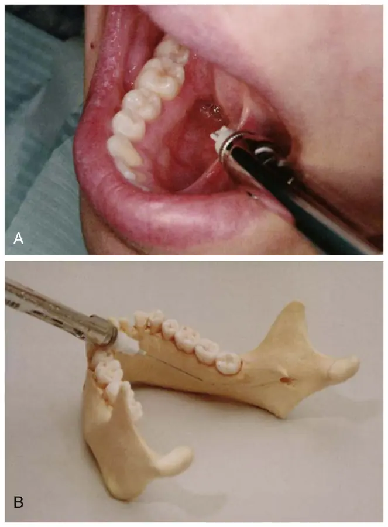

نسخه استخراجشده؛ ترجمه یا تأیید علمی انجام نشده است. وضعیت: captured
پس از بلاک عصب آلوئولار تحتانی (IANB)، لب و نیمهی زبان بیمار کاملاً بیحس است. هنگام تراش مولر اول پایین همهچیز آرام است تا فرز به بخش مزیال دندان میرسد و بیمار درد تیز حس میکند. کدام عصب از بلاک جا مانده است؟

وقتی لب بیحس است ولی فقط بخشی از یک دندان حس دارد، به عصبدهی فرعی فکر کن. شایعترین جا بخش مزیال مولر اول پایین است. چند عصب را مطرح کردهاند، از جمله عصبهای فرعی گردنی، ولی امروز مظنون اصلی عصب میلوهایوئید است.
چون این عصب بالاتر از سوراخ مندیبولار جدا شده و در شیار خودش پایین میرود، IANB معمولاً آن را بلاک نمیکند. بلاک گاو-گیتس که بسیار بالاتر تزریق میشود، عصب میلوهایوئید را هم میگیرد و مشکل عصبدهی فرعی ندارد.
دو علت دیگرِ حس باقیمانده را هم بشناس تا هر دردی را به حساب شکست IANB نگذاری.
فیبرهای عصب آلوئولار تحتانی دو طرف در خط وسط روی هم میافتند. برای همین پس از IANB موفق، سانترال یا لترال پایین ممکن است هنوز نقطههای حساس داشته باشد. بهندرت عصب میلوهایوئید هم در این حس سهم دارد.
بیحسی زبان یعنی عصب لینگوال بلاک شده. این عصب جلوتر و داخلیتر از عصب آلوئولار تحتانی است و ممکن است بیحس شود در حالی که عصب آلوئولار تحتانی بیحس نشده؛ پس زبان بیحس بهتنهایی نشانهی موفقیت IANB نیست.
نشانهی قابلاعتمادتر بیحسی لب پایین است (عصب منتال، شاخهی انتهایی عصب آلوئولار تحتانی). ولی حتی لب بیحس هم عمق بیحسی پالپ را تضمین نمیکند.